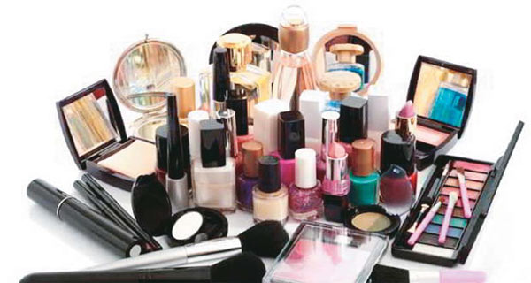

제가 만들고 싶은 IT서비스는 자신이 가지고 있는 화장품을 관리헤 주는 서비스 입니다.
저는 항상 쓸 화장품이 있음에도 불과하고 비슷한 색, 비슷한 텍스처, 비슷한 부류의 화장품을 마음 가는 대로 사곤 합니다.
그러다 보니 화장품에 대한 소비가 잦아졌습니다.
또한 화장품의 유통기한을 넘기는 경우가 많아지고 유통기한이 언제까지인지 몰라 방치하여 그대로 오랫동안 사용하는 경우가 많습니다.
그러다 보니 피부가 심하게 뒤집힐 때도 있고, 화장품 정리를 하다 보면 개봉한지 몇 년이 지난 화장품이 나오는 일이 다반사였습니다.
이에 저는 유통기한을 지킬 수 있도록 도와주면서 합리적인 소비에 도움을 주는 서비스를 만들고 싶다는 생각하였습니다.